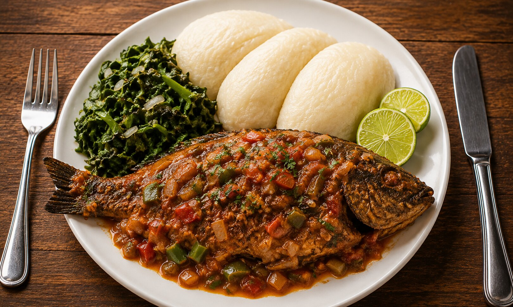

Home
Posho Recipe

Description
A hearty Ugandan meal featuring soft posho served with richly spiced
fish, fresh greens, and a touch of lime for a flavorful, satisfying
finish.
Ingredients
- Whole fish (1 pound)
- Tomatoes (2 medium)
- Onions (1 large)
- Garlic (2 cloves)
- Fresh leafy greens (1 cup)
- Bell peppers (2 medium)
- Cooking oil (2 tablespoons)
- Fresh herbs (1 tablespoon)
- Lime (1 medium)
- Salt and spices (to taste)
Steps
- Clean and season the fish with salt and spices.
-
Heat oil in a pan and sauté onions, garlic, and bell peppers
until soft.
- Add chopped tomatoes and cook until they form a sauce.
- Place the fish in the sauce and cook until done.
- Steam or boil the leafy greens until tender.
-
Prepare posho by boiling water and gradually adding maize flour,
stirring continuously until thickened.
-
Serve the posho with the cooked fish, greens, and a squeeze of
lime on top.
© 2026 Odin Recipes. All rights reserved.
Designed by Muyivu
Shafiq